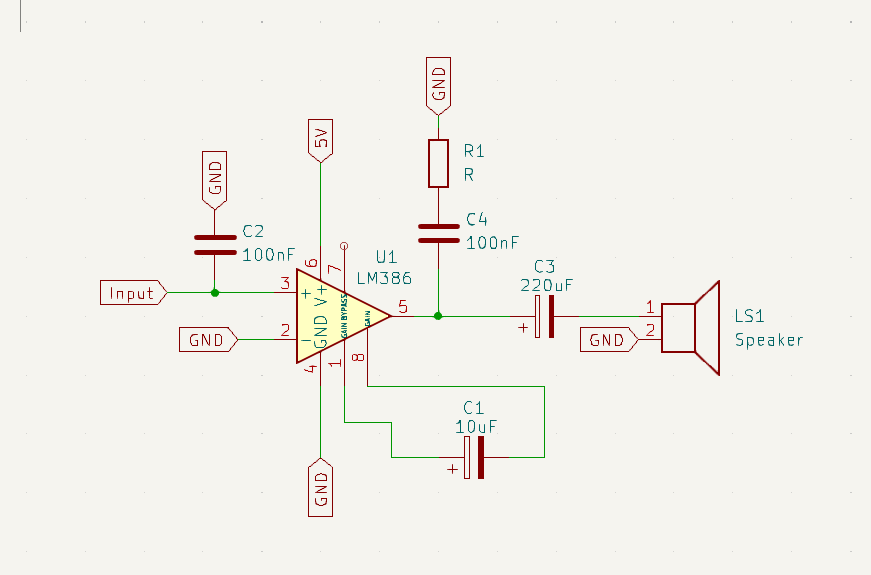
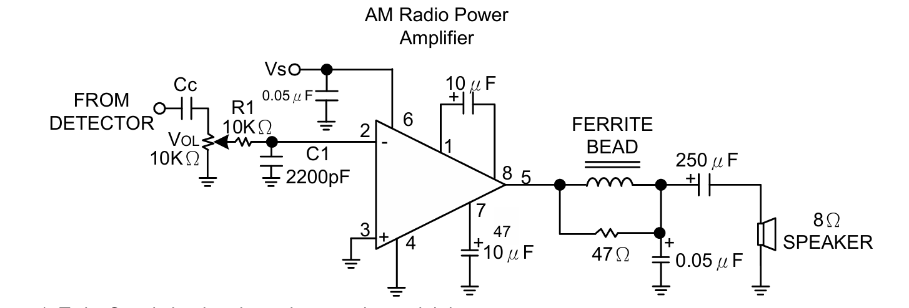
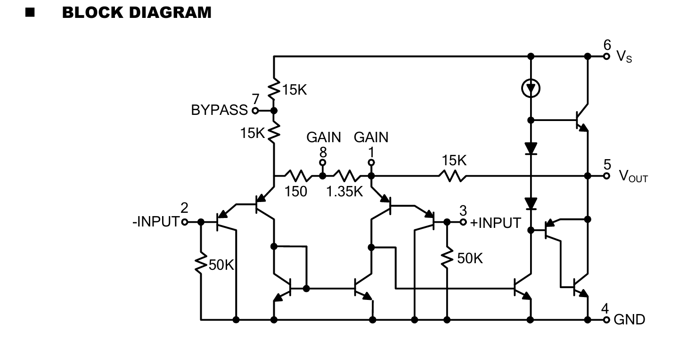

事の始まり
数か月前、youtubeの動画で秋月電子で投げ売りされている激安のスピーカーが良いという話を聞いて、そのスピーカーとついでに何も考えずに、LM386というパワーアンプICを買いました。
エンクロージャーの設計やら、電源の設計がめんどくさいことに気づきかなり長い間放置していました。
しかし、やはり一度は音を鳴らさねばという事で、LM386を使ってアンプを設計することにしました。
設計
設計はかなり適当でサンプル回路をそのまま組んだようなものです。

かなり簡素な回路ですが、普通に音は聞こえます。音は、非常に悪いです。おそらく、シールドや、ノイズフィルタ、デカップリングコンデンサが適当だからだと思います。
それに関してはどうでもよいのですが、問題は以下の動画です。
※スマホの方はすいません、なぜか閲覧できないので、PCで閲覧してください。
なんか、スピーカーから音が聞こえませんか?これはAMラジオのようでした。
この症状が発生する条件
この症状が発生する条件は、C1のコンデンサに手を置いたときに発生します。
C1のコンデンサはLM386のデータシートからわかりますが、1-8に10uFのコンデンサを置くとゲインを200倍まで高められるという事で、これを設置しています。
原因
その1
最初は、LM386のデータシートにAMラジオ用の回路が書かれていたのでこれが偶然できてしまったと考えていましたが、よく回路を見てみると、全然関係がないことがわかります。

その2
次に、人間の指が触れている時に発生するという条件を考えました。人間の指、もしくは体がどう作用しているのか考えました。
- 人間の体の抵抗が鍵
- 人間の体がアンテナになっている
この二つが考えられます。
まず、一つ目の「人間の体が鍵説」を検証します。 指を置くべきところに1MΩなどの高い抵抗値の抵抗を並列/直列で置いてみましたが、意味がなかったです。
次に、二つ目の「アンテナ説」を検証します。 指を置くべきところに、ループアンテナの代わりに適当な長さのながーーーいワイヤを置いてみました、すると明らかに受信感度が向上していました。
結果、おそらく人間の体がアンテナになっていると考えられます。
さらに原因を考える
人間の体がアンテナになっている可能性が高いですが、なぜ聞こえるのか考えるためにさらに詳しく見ていきます。

夜中に聞くと複数局を同時に受信します。これは、検波を勝手に行っている「非選択的な検波説」と、AMラジオ周波数帯すべてをカバーしている「広域受信説」二つの可能性が考えられます。
広域受信説
広域受信説ですが、LM386はオーディオ周波数帯域（20Hz〜20kHz程度）で動作するように設計されており、AMラジオの周波数帯（530kHz〜1700kHz）を直接増幅するには帯域幅が不足しています。また、聞こえるのが実際の音声（復調された低周波信号）であることから、どこかで検波が行われていると考えるべきで、もし単に広帯域受信しているだけなら、可聴音ではなくAM変調された高周波信号のみが増幅され、スピーカーからは音声として聞こえないはずです。
なので、おそらくもう一つの説が正解の可能性があります。
非選択的な検波説
この画像はデータシートのブロック図です。1ピンと8ピンの間に1.35kΩの抵抗がありますね。そこから、PN接合のトランジスタをたどってOutPutへ行っています。ここに秘密があると考えました。
ピン2(-INPUT)とピン3(+INPUT)に接続されたトランジスタは、微弱なRF信号に対して非線形に応答します。また、特に弱い信号レベルでは、トランジスタのPN接合は二次特性（スクエアロー特性）を示し、自然に検波作用を持ちます。
さらに、高ゲインの設定から入力段の非線形性がかなり高くなります。
人体という点にも重要な点があると思いました。人体は、比較的大きなキャパシタンスを持ち、人体が触れることで内部のインピーダンスが変化してこういった現象が発生した可能性があります。
スクエアアロー検波
スクエアロー検波というのは、半導体の中でも特にPN接合を持つダイオードやトランジスタが示す非線形特性を利用した検波方法です。名前の由来は、入力された信号の振幅の二乗（square）に比例して出力が得られることからきています。
実はトランジスタやダイオードって、入ってきた電圧と流れる電流の関係が完全に比例するわけではないんです。特に信号が小さいときは、電流は電圧の二乗にほぼ比例する性質があります。この性質が意図せずラジオの検波器として機能してしまうんです。
LM386の中を見てみると、入力段にはトランジスタによる差動増幅器があります。このトランジスタのベース・エミッタ間のPN接合が、微弱なAM信号を受け取ったときに非線形に反応します。普通はオーディオ信号を増幅するだけなんですが、微弱なRF（高周波）信号が入ると、この非線形性により変調された音声信号を取り出せてしまうわけです。
今回の実験では、1-8ピン間に10μFのコンデンサを配置してゲインを約200倍に上げています。このハイゲイン状態では入力段の非線形性がより顕著になり、検波作用が強くなったと考えられます。人体がアンテナになって電波を拾い、その信号がコンデンサを通じて入力段に伝わり、そこでスクエアロー検波が起きているというわけです。
なぜ完全なAMラジオにならないかというと、やはり選択性がないからです。普通のAMラジオならLCチューナーで特定の周波数だけを選んで増幅しますが、この回路には選局機能がありません。だから複数の放送局が混ざって聞こえてしまうんです。また、効率も良くないし、安定性もイマイチです。温度や電源電圧が変わるとすぐに受信状態が変わってしまうでしょう。
この現象、実はクリスタルラジオの原理に近いものがあります。必要最小限の部品で予想外の機能が得られる電子工学の面白さを感じますね。ただ、ICにとっては想定外の使い方なので、長時間の使用は避けたほうが無難かもしれません。
ワンチップAMラジオにできないのか
結論はできません。どうしても検波でちゃんとした音を出すには選択しないといけないので、コンデンサとインダクタでちゃんとバネを作らないとだめです。
総括
今回はかなり面白い現象に出会うことができました。高周波や交流などの波のある電気は苦手なのでかなり原因の特定に苦労しました。また、かなり音量が出るので決してICに良くない使い方だと思います。10W 8Ωのスピーカーを5Vの電源であの音量を出しているので負荷がかかっていると思います。
かなり面白い現象に出会う事ができてうれしかったです。